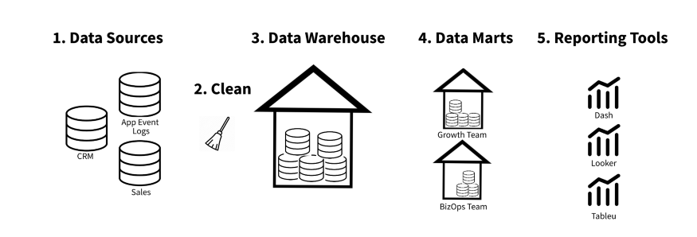
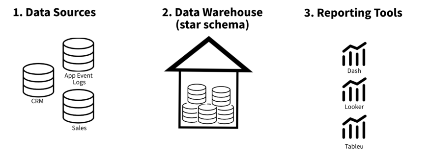
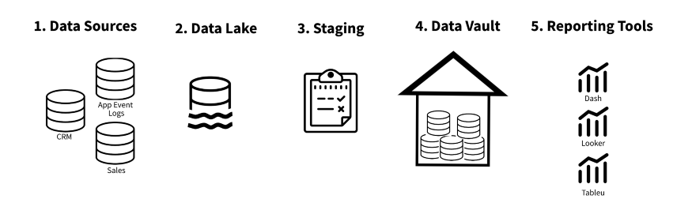
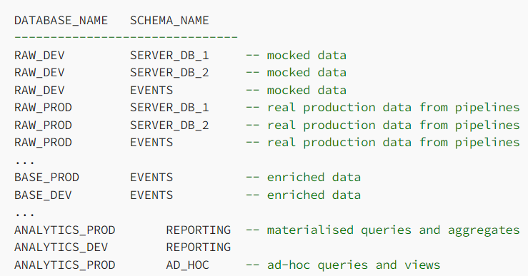
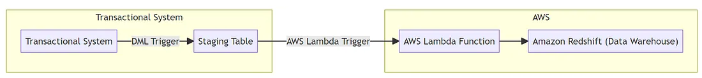
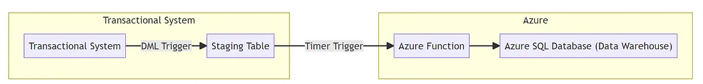
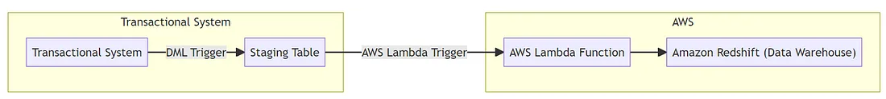

Warehouses
Misc
- Resources
- Easy way to create Live and Staging environments for your Data
- Tutorial on setting up Staging and Production environments for a BQ warehouse and a Github repo where the Dataform code lives. Pull Requests move data from the staging area to the production db.
- Easy way to create Live and Staging environments for your Data
- The main difference between a “relational database” and a “data warehouse” is that the former is created and optimized to “record” data, whilst the latter is created and built to “react to analytics.”
- Optimized for read-heavy workloads that scan a small number of columns across a very large number of rows and can easily scale to petabytes of data
- Cons
- Can become expensive when an organization needs to scale them
- Do not perform well when handling unstructured or complex data formats.
- Pros
- Integrating multiple data sources in a single database for single queries
- Maintaining data history, improving data quality, and keeping data consistency
- Providing a central view for multiple source system across the enterprise
- Restructuring data for fast performance on complex queries
- Set up alerts and monitoring
- ETL Monitoring: See if anything failed to load. It can be a failed file with the wrong format or a streaming data record that doesn’t comply with table schema.
- Data Quality Checks: Any missing datasets from external providers data malformed, i.e. NULL, formats, etc.
- Cost Monitoring: Identify any long-running queries and costs
- Usage Monitoring: Alert if when there’s activity on your account.
OLAP vs OLTP
{kind=link}
OLAP (Online Analytical Processing)(aka the Cube)(Data Warehouses)
- db designed to optimize performance in analysis-intensive applications
- Aggregates transactions to be less frequent but more complex
- Examples: Snowflake, Bigquery
OLTP (Online Transaction Processing) db designed for frequent, small transactions
- Executes a number of transactions occurring concurrently (i.e. at the same time)
- Use cases: online banking, shopping, order entry, or sending text messages
Data model: OLTP systems typically use a normalized data model, which means that data is stored in multiple tables and relationships are defined between the tables. This allows for efficient data manipulation and ensures data integrity. OLAP systems, on the other hand, often use a denormalized data model, where data is stored in a single table or a small number of tables. This allows for faster querying, but can make data manipulation more difficult.
Data volume: OLTP systems typically deal with smaller amounts of data, while OLAP systems are designed to handle large volumes of data.
Query complexity: OLTP systems are designed to handle simple, short queries that involve a small number of records. OLAP systems, on the other hand, are optimized for more complex queries that may involve aggregating and analyzing large amounts of data.
Data updates: OLTP systems are designed to support frequent data updates and insertions, while OLAP systems are optimized for read-only access to data.
Concurrency: OLTP systems are designed to support high levels of concurrency and handle a large number of transactions simultaneously. OLAP systems, on the other hand, are optimized for batch processing and may not perform as well with high levels of concurrency.
Brands
- Amazon Redshift
- Redshift is best when you have data engineers who want control over infrastructure costs and tuning.
- Google BigQuery
- Best when you have very spiky workloads (i.e. not steady-state).
- Not charged any computational expense for loading the data into its storage.
- Proactive Storage Cost Optimization.
- If there is data in BigQuery that hasn’t been altered in over 90 days, they move it into a long-term storage tier that is half the price of regular storage.
- Caches query results for 24 hours after running a query.
- BigQuery stores the results of a query as a temp table, and if the underlying data has not changed, you will not be charged for running the same query twice in that timeframe.
- Snowflake
A cloud data warehouse for analytics. It’s columnar, which means that data is stored (under the hood) in entire columns instead of rows; this makes large analytical queries faster, so it’s a common choice for how to build analytical DBs.
Best when you have a more continuous usage pattern
Support for semi-structured data, data sharing, and data lake integration
Resource: Snowflake Data Warehouse Tutorials
Snowpark - Allows you to run Python code inside the database. Brings code to the warehouse instead of importing the data to your code. Has a DataFrame API so you can run cleaning code that is more readable when coded with python than SQL or ML models on the data inside of the warehouse.
List all schemas
select "database_name" as DATABASE_NAME ,"name" as SCHEMA_NAME from table(result_scan(last_query_id())) where SCHEMA_NAME not in ('INFORMATION_SCHEMA') -- optional filter(s) ;
- Azure Synapse Analytics
- Fully managed, cloud-based data warehousing service offered by Microsoft Azure. It offers integration with Azure Machine Learning and support for real-time analytics.
- Data Bricks
- Company behind spark technology and have built a cloud-based data warehousing service.
- Teradata
- SAP HANA
- ClickHouse
- Opensource, built by Yandex (Russian search engine)
- Apache Hadoop running Apache Hive
- Hive: an open-source data warehouse solution for Hadoop infrastructure. It is used to process structured data of large datasets and provides a way to run HiveQL queries.
- Resource: Apache Hive Tutorial with Examples
- Hive: an open-source data warehouse solution for Hadoop infrastructure. It is used to process structured data of large datasets and provides a way to run HiveQL queries.
Pipeline Strategies
- Inmon
- Prioritizes accuracy and consistency of data above all else.
- Querying is pretty fast (data marts)
- Tends to be a lot of upfront work, however subsequent modifications and additions are quite efficient.
- Recommended if:
- Data accuracy is the most important characteristic of your warehouse
- You have time/resources to do a lot of upfront work
- Kimball
- places significant emphasis on the creation of a centralized data repository (data warehouse) which serves as a singular source of truth, integrating and storing data from various operational systems in a consistent and structured manner.
- Places a strong emphasis on creating dimensional data models
- Recommended if:
- If you’re business requirements are well-defined and stable
- You are querying lots of data often
- Data Vault
- The data vault structure is a more complex and flexible design that can accommodate large amounts of data and changes in the data over time.
- Trys to fix disadvantages of Kimball and Inmon strategies by waiting to the last minute to develop any kind of structure
- Workflow: Sources –> unstructured storage (data lake) –> Staging which supports operations such as batch and streaming processes –> data vault which stores all raw data virtually untouched (non-relational db?)
- Components
- Hubs - Collections of all distinct entities. They represent the business entities.
- Example: An account hub
- Fields: account, account_ID, load_date, and src_name
- This allows us to track where the record originally came from when it was loaded, and if we need a surrogate key generated from the business key.
- Example: An account hub
- Links - Establish relationships between hubs and capture the associations between different entities.
- They contain the foreign keys of the related hubs, enabling the creation of many-to-many relationships.
- Satellites - Store the descriptive information about the hubs, providing additional information about context, relationships, and attributes.
- They include historical data, audit information, and other relevant attributes associated with a specific point in time.
- Hubs - Collections of all distinct entities. They represent the business entities.
- Advantages: efficient, fast to implement, and highly dynamic
- Allows for a flexible and scalable data warehouse architecture. It promotes data traceability, auditability, and historical tracking. This makes it suitable for scenarios where data integration and agility are critical, such as in highly regulated industries or rapidly changing business environments.
- Disadvantages: querying can be quite slow
- Uh doesn’t seem to be much cleaning either
- Recommended if:
- Your business goals change often
- You need cheap server and storage costs
- One Big Table (OBT)
- OBT stores data in one wide table.
- Pros
- Using one big table, or a denormalized table, can simplify queries, improve performance, and streamline data analysis.
- It eliminates the need for complex joins, eases data integration, and can be beneficial in certain scenarios.
- This method improves performance in BigQuery
- Cons:
- May lead to redundancy, data integrity challenges, and increased maintenance complexity.
{kind=link}
{kind=link}
{kind=link}
Design
- Misc
- Notes from
- Best practice to keep only a portion of data in the RAW database and use it to update our BASE database tables.
- Databases Inside the Warehouse:
- Raw (or Source): Raw data is inported into this db; source of truth
- Base: Where data is imported from Source db and has had basic field transformations; storage
- Analytics: Where data is ready to be queried; ad-hoc analytics and materialized queries and views
- Environments
- Each db will have staging and production branches
- Staging (or Development): mocking and developing data transformations
- Don’t do these types of transformations in this layer:
- No filter (e.g. no “where”)
- No joins
- No group by
- No calculations
- Don’t do these types of transformations in this layer:
- Production: Data is validated and transformations applied on a schedule
- Staging (or Development): mocking and developing data transformations
- Each db will have staging and production branches
- Example: Snowflake Warehouse
- _DEV indicates the staging branch of the database
- _PROD idicates the production branch of the database
{kind=link}
Loading Strategies
- Misc
- The most common strategy to load data is to populate dimension tables and then fact tables. (See Databases, Modeling)
- The order here is important because we need to use primary keys from dimension tables in fact tables to create relationships between tables.
- There is an exception. When we need to load a fact table before a dimension table, this technique name is Late Arriving Dimensions.
- In this technique, we can create surrogate keys in a dimension table, and update it by ETL process after populating the fact table.
- The most common strategy to load data is to populate dimension tables and then fact tables. (See Databases, Modeling)
- Methods
- Full Load - Involves loading all data from source systems into the data warehouse. This strategy is typically used in the case of performance issues or lack of columns that could inform about row modification.
- Incremental Load - Involves loading only new data since the last data load. If rows in the source system can’t be changed, we can load only new records based on a unique identifier or creation date. We need to define a “watermark” that we will use to select new rows.
- Delta Load - Focuses on loading only the changed and new records since the last load. It differs from incremental load in that it specifically targets the delta changes rather than all records. Delta load strategies can be efficient when dealing with high volumes of data changes and significantly reduce the processing time and resources required.
Database Triggers
{kind=link}
- A database trigger is a function that gets triggered every time a record is created or updated (or even deleted) in the source table (in this case, a transactional table)
- Database triggers provide an effective, solution to extracting data from the transactional system and seamlessly integrating it into the data warehouse while also not adversely impacting that system.
- Use case — You see a couple of data points in your transactional system’s tables that you would require for your reporting metrics but these data points are not being provided by your transactional system’s API endpoints. So, there is no way you can write a script in Python or Java to grab these data points using the API. You cannot use direct querying on your transactional system as it can negatively impact its performance.
- Misc
- Notes from Harnessing Triggers in the Absence of API Endpoints
- Provides a detailed step-by-step
- If your transactional system does not have a lot of traffic (or) is not directly used by end-user applications, then it can be set up as a synchronous process. In that case, the lambda or the Azure functions would need to have the trigger event as the transactional database’s staging table. The appropriate database connection information would also need to be provided.
- Notes from Harnessing Triggers in the Absence of API Endpoints
- Database Triggers
- DDL Triggers - Set up whenever you want to get notified of structural changes in your database
- Useful when you wish to get alerted every time a new schema is defined; or when a new table is created or dropped. Hence, the name DDL (Data Definition Language) triggers.
- DML Triggers - Fired when new records are inserted, deleted, or updated
- i.e. You’re notified anytime a data manipulation change happens in a system.
- DDL Triggers - Set up whenever you want to get notified of structural changes in your database
- Syntax:
<Timing> <Event>- Trigger Event - The action that should activate the trigger.
- Trigger Timing - Whether you need the trigger to perform an activity before the event occurs or after the event occurs.
- Specialized triggers provided by cloud services
- AWS
- Lambda Triggers: These triggers help initiate a lambda function when a specified event happens. Events can be internal to AWS, or external in nature. Internal events can be related to AWS services such as Amazon S3, Amazon DynamoDB streams, or Amazon Kinesis. External events can come in from the database trigger of a transactional system outside of AWS or an IoT event.
- Cloudwatch Events: If you have used standalone relational databases such as Microsoft SQL Server and SQL Server Management Studio (SSMS), you may have used SQL Server Agent to notify users of a job failure. Cloudwatch is specific to AWS and is used not only to notify users of a job failure but also to trigger Lambda functions and to respond to events. The important difference between a CloudWatch Event and a Lambda Trigger is that while Lambda triggers refer to the capability of AWS Lambda to respond to events, CloudWatch Events is a broader event management service that can handle events from sources beyond Lambda. On a side note, while SQL Server Agent requires an email server to be configured, Cloudwatch has no such requirement.
- Azure
- Blob Trigger: Azure blobs are similar to S3 buckets offered by AWS. Similar to how Amazon S3 notifications can be used to get alerts about changes in S3 buckets; blob triggers can be used to get notified of changes in Azure blob containers.
- Azure Function Trigger: These are the Azure equivalent of AWS Lambda Function Triggers. These triggers can be used to initiate an Azure function in response to an event within Azure or an external event, such as an external transactional database trigger, an HTTP request, or an IoT event hub stream. Azure functions can also be initiated based on a pre-defined schedule using a Timer Trigger.
- AWS
- Example: Transfer data from a transactional database to a warehouse (See article for further details)
- Identify table in transactional db with data you want
- Create a staging table that’s exactly like the transaction table
- Ensure that you don’t have any additional constraints copied over from the source transactional table. This is to ensure as minimal impact as possible on the transactional system.
- For a bulk data transfer of historical transaction data:
CREATE TABLE AS SELECT(SELECT * INTOin SQL Server) while creating the staging table. This will create the staging table pre-populated with all the data currently available in the transaction table.- Do an empty UPDATE on all the records in the transaction table
- e.g.
UPDATE TABLE Pricing_info SET OperationDate=OperationDate - This is not a recommended approach as it could bog down the transactional system due to the number of updates and undo statements generated. Moreover, the transaction table will also be locked during the entire update operation and will be unavailable for other processes thus impacting the transactional system. This method is okay to use if your transaction table is extremely small in size.
- e.g.
- In addition to that, also have a column to indicate the operation performed such as Insert, Update, Delete).
- Set up a DML trigger directly on the transaction table
All DML events namely Insert, Delete, and Update in the transaction table should have a separate trigger assigned to them.
- The below example shows the trigger for Insert. The rest of the triggers are created similarily — just by substituting 2 INSERTs (trigger event, select statement) for DELETE or UPDATE (See article for code) and using a different name in CREATE
Insert trigger in (SQL Server)
-- Create the trigger CREATE TRIGGER TransactionTrigger_pricing_Insert ON Pricing_info --Trigger Event AFTER INSERT AS BEGIN -- Insert new records into the staging table INSERT INTO StagingTable_pricing (ID, Column1, Column2, OperationType) SELECT ID, Column1, Column2, 'INSERT' FROM inserted END;- “Pricing_info” is the name of transactional table with the data you want
- “StagingTable_pricing” is the name of the staging table
AFTER INSERTwhere AFTER is the trigger timing and INSERT is the trigger event- In the SELECT statement, “INSERT” is the value for that extra column in the staging table that tells us which type of operation this was.
- Set-up the specialized trigger in the warehouse
- AWS 
- A database DML trigger in the transactional system’s database. Whenever a new record comes into the transactional database table, the trigger would insert the new data into a staging table within the transactional database.
- If you based it on a schedule (using AWS Cloudwatch events), the Lambda trigger would trigger a lambda function to grab the data from the staging table to a table in the datawarehouse (Redshift)
- A database DML trigger in the transactional system’s database. Whenever a new record comes into the transactional database table, the trigger would insert the new data into a staging table within the transactional database.
- Azure 
- When the timer trigger activates, it would run the Azure Function which would then pick up the new/updated/deleted records from the staging table.
- AWS 